Magnification: When calculating image magnification, several variables must be considered. Primarily is objective magnification, Mobj. However, additional magnification may be introduced via other camera relay/zoom optics, denoted as Mrelay herein. The total magnification of the system, Mtot, may be found using the following equation:
Mtot = Mobj * Mrelay
Note that additional sources of image magnification are simply multiplied in like fashion.
Backprojected Pixel Size: Backprojected pixel size (widefield) and virtual pixel size (confocal) is the apparent de-magnified size of a single pixel back-projected into the specimen plane and represented by the variable pixproj. This value is found simply by dividing the real pixel size, pixreal, by the total magnification of the system, Mtot:
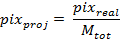
Lateral Resolution: Lateral resolution refers to the optical resolution in the directions orthogonal to the optic axis of the imaging system, the x and y directions. For our purposes, we use the Rayleigh Criterion in order to estimate optical resolution.
The Rayleigh Criterion is a generally accepted metric for determining the resolving power of an optical system. According to the Rayleigh Criterion, at least 26% contrast must exist between the images of two point emitters in order for each emitter to be considered optically resolved from the other. When considering the profile of two Airy Disks of similar intensity in a low noise environment, this translates to the global maximum of one Airy Disk overlapping with the first minimum of the adjacent Airy Disk.
For widefield imaging, the Rayleigh Criterion for lateral resolution, rlat, may be expressed as:
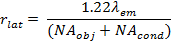
Where NAobj is the numerical aperture of the objective and NAcond is the numerical aperture of the condenser. For the purposes of this tool λem (the emission wavelength) is assumed to be 546 nm for diascopic (transmitted light) imaging. This corresponds to the center wavelength of light allowed to pass through commonly used green interference filters.
For widefield episcopic (reflected light) imaging, including epifluorescence, the objective also acts as the condenser. This allows us to simplify the above equation to:
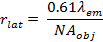
This equation changes when considering the lateral resolution of microscopes utilizing structured illumination patterns rather than widefield illumination. Specifically we address the increased resolution of spinning disk and point scanning confocal. In these cases lateral resolution is estimated using the following equation:
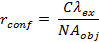
Where:
C = 0.2AU + 0.39
rconf is the confocal lateral resolution, C is a constant, λex is the excitation wavelength, and AU is the number of Airy Units corresponding to the selected pinhole diameter and excitation wavelength. Please note that this equation provides a coarse estimate of lateral resolution in a confocal microscope. In actuality, the relationship between pinhole diameter and lateral resolution is non-linear and not so simply modeled as above.
Axial Resolution: Axial resolution refers to the optical resolution in the directions parallel to the optic axis, the z directions.
For widefield diascopic (transmitted light) imaging, the Rayleigh Criterion for axial resolution, rax, may be expressed as:
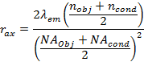
Where nobj is the refractive index of the objective immersion medium, ncond is the refractive index of the condenser immersion medium, NAobj is the numerical aperture of the objective and NAobj is the numerical aperture of the condenser. For the purposes of this tool λem (the emission wavelength) is once again assumed to be 546 nm for diascopic imaging.
For widefield episcopic (reflected light) imaging, including epifluorescence, the objective acts as both the objective and condenser. This allows us to simplify the above equation to:
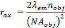
This equation changes when considering the axial resolution of point scanning and spinning disk confocals. Structured illumination allows for slightly increased resolution compared to the widefield case. We use the following equation to estimate axial resolution for confocal microscopes:
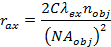
Given that:
C = 0.32 AU + 0.43
Note that, as with estimating lateral resolution for confocal microscopes, values calculated using these equations are strictly coarse estimates. In reality, the relationship between pinhole diameter and axial resolution is non-linear.
Sampling Rate: This term originated in the field of signal processing and is formalized by the Nyquist-Shannon Sampling Criterion (NSSC). In simple terms, the NSSC states that in order for a given frequency to be reconstructed without losing information it must be sampled at least twice. For example, in the realm of digital imaging this means that if the calculated optical resolution of a given system is 200 nm, then the pixel size must be 100 nm or smaller in order to properly sample the finest available spatial details. In practice, the image must be sampled approximately 2.3 – 4 times in order to properly capture the finest available frequency information.
The sampling rate, fs, may be calculated using the following equations:
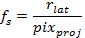
or
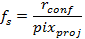
Where rlat is the lateral resolution in a widefield microscope, rconf is the lateral resolution in a confocal microscope, and pixproj is the back-projected pixel size.
Brightness: Among many other factors, the microscope objective strongly influences the brightness of a recorded image. Brightness increases with higher Numerical Aperture (NA) and decreases with higher magnification. Note that the calculation for Brightness is different for transmitted and reflected light imaging as the former also requires a separate condenser for illumination.
For diascopic (transmitted light) imaging, brightness may be calculated using the following equation:
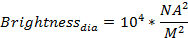
Where M is the magnification of the objective lens.
For episcopic (reflected light) imaging, brightness may be calculated using the following equation:
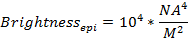
Backprojected Pinhole Radius: Backprojected pinhole radius is the effective de-magnified size of the pinhole aperture(s) projected in the specimen plane and represented by the variable BPPR. This value is found simply by dividing the real pinhole radius, pinholeRadius, by the objective magnification, Mobj. Note that for the point-scanning confocal mode, users are not allowed to specify intermediate camera relay optics for additional magnification. This is because additional "magnification" in point-scanning confocal microscopes is generally performed using the "scan zoom' functionality. Scan zoom is realized simply by limiting the scan to a smaller area, not by introducing additional real magnification.
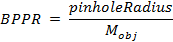
Airy Units: The radius of the Airy Disk formed by the image of an emitter with sub-resolution dimensions, also known as one Airy Unit (AU), is the distance from the central intensity maximum to the first minimum (first dark ring). Note that this is not the same as the full width at half maximum.
In confocal microscopy systems, "Airy Units" generally refers to the ratio of the back-projected pinhole radius (BPPR) to the radius of the Airy Disk. Stronger optical sectioning is realized with decreasing BPPR relative to the Airy Disk radius. The number of Airy Units may thus be found using the equation:
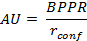
Return To Calculator